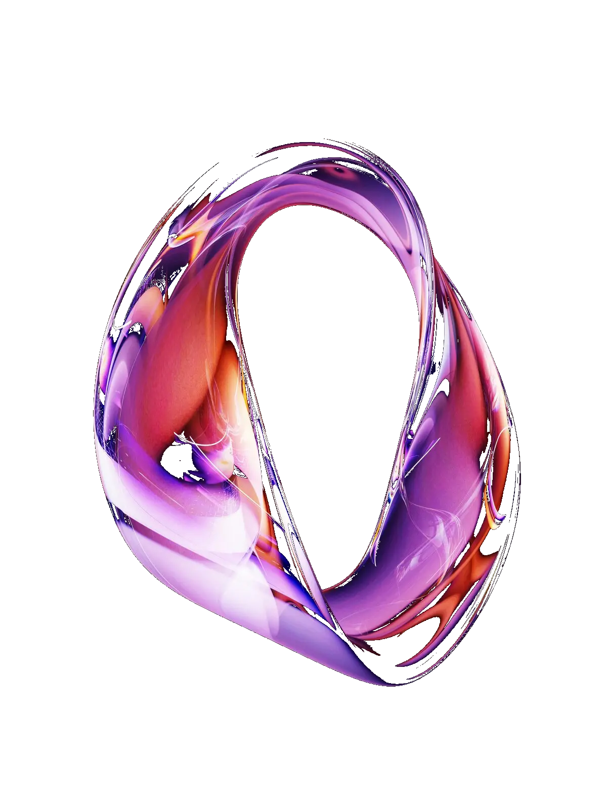
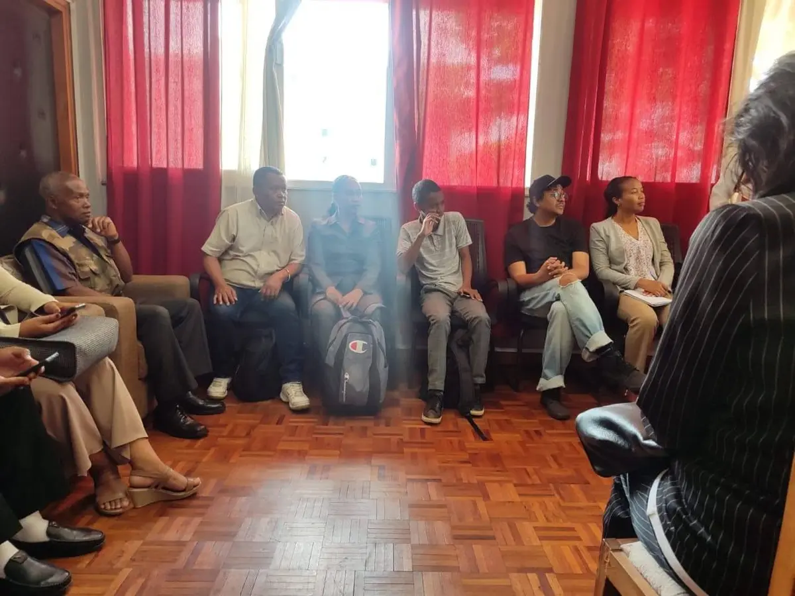

Fampahafantarana, fampihaonana, fampivondronana. Izany no azo amintinana ny antom-pisian'ny hetsika karakarain'ny Teny Gasy 2.0. Fampahafantarana fa azo entina amin'ny sehatra marolafy sy anatin'ny zava-misy iainana ankehitriny ny teny malagasy, fa tsy voatery mijanona amin'ny sehatra efa ahitan'ny maro aza ihany. Fampihaonana ny mpisehatra isan-karazany mampiasa ny teny malagasy amin'ny sehatra misy azy, indrindra amin'ireo sehatra izay tsy ampoizin'ny olona hoe ampiasana ny teny malagasy, ka isian'ny fifanakalozana sy ny fifampizarana traikefa. Fampivondronana ny mpandala sy ny mpitolona ho an'ny teny malagasy, na ny efa ela nihetezana na ny vao maitso volo, fa ny tondro tokana tsy mahazo aho ary ny akanga maro no tsy vakin'amboa.
Anisan'ny singa fototra mandrafitra ny hetsika izy ity. Sehatra ihaonan'ny mpampiasa sy mpikirakira ny teny malagasy amin'ny tontolo marolafy; isian'ny fifanakalozan-kevitra, fanatevenam-pahalalana, sy fifampizarana mahasoa sy ahafahana mampivoatra hatrany ny teny malagasy sy ny mpampiasa azy.
Fotoana iray ahafahana mampita fahalalana sy fahaiza-manao azo ampiharina avy hatrany, ka ahafahan'ny mpisitraka hitondra ny anjara birikiny mivantana amin'ny fampivoarana sy ny fampiroboroboana ny teny malagasy, indrindra amin'ny sehatra izay mbola tsy isongadinany loatra.
Fomba iray enti-mampandray anjara ny tsirairay ka ahafahan'ny mpampiasa teny malagasy mampihatra ny fahaizany mampiasa ny teniny, na amin'ny alalan'ny hevitra lalina na miavaka ampitaina, na amin'ny alalan'ny kanto avohitra amin'ny fanehoana sy ny fomba filazan-javatra.
Mila adisisika ny teny malagasy. Fa inona moa ilay adisisika? Ny ezaka rehetra atao eo anivon'ny seha-pahefana afaka manova zavatra ho an'ny teny malagasy. Anisan'ny lohalaharana amin'izany ny tomponandraiki-panjakana sy ny rafi-panjakana isan'ambaratongany.

Ankoatra ny maha fitaovam-pifandraisana ny tranonkala sy ny tambajotra sôsialy ampiasain'ny Teny Gasy 2.0, dia sehatra iray ahafahana mizara, mifanakalo, ary mampivoatra ny teny malagasy amin'ny fomba maro koa izy ireny. Manasa anao hitsidika hahafahanao mahita izany.